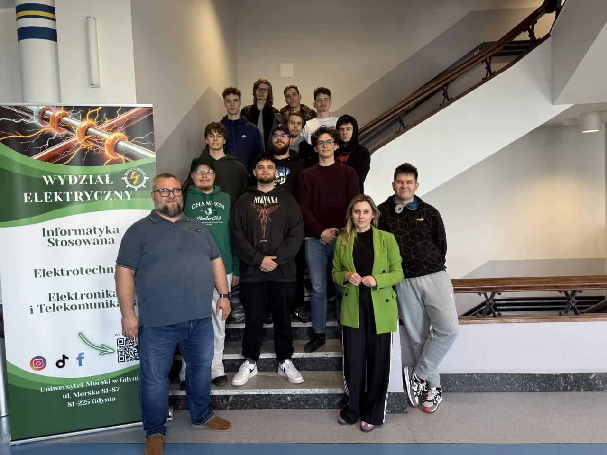

Ciekawość to początek
Uczymy się.
Tworzymy.
Odkrywamy.
Łączymy ludzi, których ciekawi świat. Zamieniamy pytania w pomysły, a pomysły w projekty.
Poznaj nasze koło ↓
01 / Kim jesteśmy
Wiedza najlepiej
działa wspólnie.
Jesteśmy zespołem pasjonatów, którzy lubią zadawać pytania i szukać własnych odpowiedzi. Spotykamy się, eksperymentujemy i uczymy przez działanie — niezależnie od tego, czy dopiero zaczynasz, czy masz już własne pomysły.
01zespół ciekawych ludzi
∞pomysłów do sprawdzenia
02 / Zobacz, co robimy
Pomysły w działaniu.
Projekty, eksperymenty i wyjazdy, które pokazują, że nauka może zaczynać się od każdego pytania.
Masz pomysł? Wpadnij do nas.